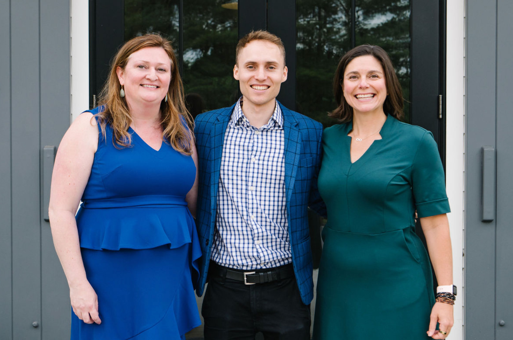

About SSC
conservation and Innovation
are our guiding principles
Our approach is deeply rooted in years of experience finding sustainable solutions.
MISSION
SSC’s overarching goal is to protect natural resources and public health by radically transforming standard building practices in planning, design, and policy implementation so green is the mainstream. Our work is targeted to steadily advance the state of the art until all infrastructure, buildings, and communities are designed, constructed, and managed sustainably. We impact over 50 building projects each year and support green building policies around the country. Our mission at SSC is to elevate the collective knowledge and awareness of sustainable strategies among each member of our team and the occupants of the buildings we impact. Together, we're paving the way toward a brighter, greener future for all.
Process
At SSC, our dynamic team brings extensive expertise to the table when it comes to the sustainable design process and its diverse rating systems. We are committed to personalization, tailoring our approach to seamlessly align with the unique needs of each project team. Our mission is to provide the essential guidance, assistance, and unwavering support required to achieve certifications or meet the sustainability goals established by the project team. SSC specializes in helping building owners, developers, and design team members identify and assess sustainable strategies for both new construction and renovation projects. Our comprehensive services extend to tenants, owners, and property managers of existing properties.
TEAM
Colleen Soden
Founder
Colleen Soden's extensive experience spans more than twenty years across sustainability, encompassing planning, architecture, and landscape architecture.
Her diverse project portfolio includes some of the nation's most sustainable schools, award-winning science laboratories, prestigious institutional structures, mixed-use urban developments, modern office buildings, multifamily housing, vibrant retail spaces, and cutting-edge healthcare facilities.
Colleen's career journey has taken her through the public, private, and nonprofit sectors, providing her with a comprehensive perspective that greatly informs her current role as a green consultant. Over the course of her career, she has led more than two hundred LEED and advanced sustainability projects, with a particular focus on driving initiatives for energy efficiency and natural resource conservation.
Her dedication to sustainability is reflected in her extensive educational background, which includes nationally recognized LEED and Sustainability training programs, as well as notable appearances at national conferences. Colleen's commitment to championing sustainable development began in 1998 during her participation in the Sustainable Futures program in Monteverde, Costa Rica. In addition to her architecture degree, she has completed the Harvard T.H. Chan School of Public Health-Center for Health and the Global Environment Executive Education for Sustainability Leadership Program.
Currently residing in Winchester, Massachusetts, Colleen actively contributes to her community by volunteering on the town's Energy Committee and the Educational Facilities Planning & Building Committee, where she co-chairs the Sustainability committee. She enjoys traveling and learning new languages with her husband Mark and their two children, Liam and Alyse.
Kelley Tapia
Sustainability Consultant
With over 20 years of directing high-profile projects as a licensed architect, Kelley Tapia is known for delivering imaginative and intuitive design solutions to her clients.
Her leadership perspective and management approach are rooted in empathy and understanding. These principles are informed by extensive experience working on both sides of the built environment design process — as an owner and a design services leader. Kelley’s intention to design healthy spaces for future generations led her to EcoRise, first as a volunteer, and now as Vice-Chair of the Board of Directors, which has continued to inspire her to help create positive global change through mentorship and education. She is a LEED and WELL accredited professional, and a Fitwel Ambassador. Her focus is on driving future design solutions with sustainability and well-being in mind. She creates opportunities to be outside as much as possible, from cycling on her new gravel bike to hiking in Colorado, Catskills and the Berkshires.
Arran French
Sustainability Consultant
Arran French is a sustainable-minded, architectural designer with multiple years of experience in the design field.
A passionate steward of sustainability, he incorporates sustainable solutions into all aspects of his work. With a bachelor’s degree from the University of California, Berkeley in Sustainable Design, and a Master of Architecture from the Boston Architectural College, Arran combines his design sense and technical skills to tackle sustainability issues from an informed, wholistic perspective. Sustainability is a ubiquitous field that requires cross-disciplinary knowledge to ensure its success. Not only has Arran experience as an architectural designer, but he has also worked in the digital manufacturing, city planning, and construction fields. Arran’s multi-faceted experience contributes to fruitful collaborative work with architects, engineers, and contractors, which he does on a daily basis. Outside of work, Arran’s extensive use of digital CAD software has developed into a desire to construct his ideas in three-dimensions. His architectural work has developed into hands-on hobbies such as furniture-making, tailoring, and electronics repair. Arran combines his skills in 3D scanning, GIS, and digital manufacturing to bring his designs to life with his 3D printers and CNC cutter.